<!DOCTYPE html><html lang="zh-CN"><meta charset="utf-8"><meta name="viewport" content="width=device-width,initial-scale=1,minimum-scale=1"><link rel="manifest" href="/site.webmanifest"><link rel="stylesheet" type="text/css" href="static/css/style.css"><title>FUUN.FUN | 奇趣网站收藏家</title><meta name="generator" content="Jekyll v3.8.7"><meta property="og:title" content="FUUN.FUN"><meta property="og:locale" content="zh_CN"><meta name="description" content="奇趣网站收藏家"><meta property="og:description" content="奇趣网站收藏家"><link rel="canonical" href=""><meta property="og:url" content="https://www.luyuz.cn/"><meta property="og:site_name" content="FUUN.FUN"><script type="application/ld+json"> {"@type":"WebSite","url":"https://www.luyuz.cn/","headline":"FUUN.FUN","name":"FUUN.FUN","description":"奇趣网站收藏家","@context":"https://schema.org"}</script><meta property="og:image" content="https://i.loli.net/2020/05/28/Ue7AQWfcRYiHdXF.png"><meta property="og:image:width" content="1090"><meta property="og:image:height" content="570"><meta name="twitter:card" content="summary_large_image"><script async="" src="static/js/js-UA-93920714-4.js"></script><script>function gtag(){dataLayer.push(arguments)}window.dataLayer=window.dataLayer||[],gtag("js",new Date),gtag("config","UA-93920714-4")</script><header><div class="logo"> <a href=""></a></div><input type="checkbox" checked="true" id="antzone"> <label for="antzone"></label> <nav><ul><li><a href="" class="selected">全部(66)</a></li><li><div class="icon" style="background-color:#316af1"> <svg xmlns="http://www.w3.org/2000/svg" width="18" height="18" viewbox="0 0 24 24" fill="none" stroke="#fff" stroke-width="2" stroke-linecap="round" stroke-linejoin="round" class="feather feather-globe"><circle cx="12" cy="12" r="10"></circle><line x1="2" y1="12" x2="22" y2="12"></line><path d="M12 2a15.3 15.3 0 0 1 4 10 15.3 15.3 0 0 1-4 10 15.3 15.3 0 0 1-4-10 15.3 15.3 0 0 1 4-10z"></path></svg></div><a href="world.html">世界</a></li><li><div class="icon" style="background-color:#8ec90e"> <svg xmlns="http://www.w3.org/2000/svg" width="18" height="18" viewbox="0 0 24 24" fill="none" stroke="#fff" stroke-width="2" stroke-linecap="round" stroke-linejoin="round" class="feather feather-book"><path d="M4 19.5A2.5 2.5 0 0 1 6.5 17H20"></path><path d="M6.5 2H20v20H6.5A2.5 2.5 0 0 1 4 19.5v-15A2.5 2.5 0 0 1 6.5 2z"></path></svg></div><a href="history.html">历史</a></li><li><div class="icon" style="background-color:#02aaff"> <svg xmlns="http://www.w3.org/2000/svg" width="18" height="18" viewbox="0 0 24 24" fill="none" stroke="#fff" stroke-width="2" stroke-linecap="round" stroke-linejoin="round" class="feather feather-target"><circle cx="12" cy="12" r="10"></circle><circle cx="12" cy="12" r="6"></circle><circle cx="12" cy="12" r="2"></circle></svg></div><a href="game.html">游戏</a></li><li><div class="icon" style="background-color:#ffb547"> <svg xmlns="http://www.w3.org/2000/svg" width="18" height="18" viewbox="0 0 24 24" fill="none" stroke="#fff" stroke-width="2" stroke-linecap="round" stroke-linejoin="round" class="feather feather-zap"><polygon points="13 2 3 14 12 14 11 22 21 10 12 10 13 2"></polygon></svg></div><a href="creativity.html">创意</a></li><li><div class="icon" style="background-color:#ff4242"> <svg xmlns="http://www.w3.org/2000/svg" width="18" height="18" viewbox="0 0 24 24" fill="none" stroke="#fff" stroke-width="2" stroke-linecap="round" stroke-linejoin="round" class="feather feather-smile"><circle cx="12" cy="12" r="10"></circle><path d="M8 14s1.5 2 4 2 4-2 4-2"></path><line x1="9" y1="9" x2="9.01" y2="9"></line><line x1="15" y1="9" x2="15.01" y2="9"></line></svg></div><a href="shadiao.html">沙雕</a></li><li><div class="icon" style="background-color:#23c4a4"> <svg xmlns="http://www.w3.org/2000/svg" width="18" height="18" viewbox="0 0 24 24" fill="none" stroke="#fff" stroke-width="2" stroke-linecap="round" stroke-linejoin="round" class="feather feather-terminal"><polyline points="4 17 10 11 4 5"></polyline><line x1="12" y1="19" x2="20" y2="19"></line></svg></div><a href="developer.html">程序员</a></li></ul></nav><div class="footer"><div class="rights"><p class="a_animation">Made by <a href="javascript:;" target="_blank">@Bakumon</a></p></div></div></header><section class="main"><div class="link_item"><div class="content"> 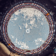<div class="title a_animation"> <a href="javascript:;" target="_blank">国际空间站 <svg xmlns="http://www.w3.org/2000/svg" width="18" height="18" viewbox="0 0 24 24" fill="none" stroke="#000000" stroke-width="2" stroke-linecap="round" stroke-linejoin="round"><g fill="none" fill-rule="evenodd"><path d="M18 14v5a2 2 0 0 1-2 2H5a2 2 0 0 1-2-2V8c0-1.1.9-2 2-2h5M15 3h6v6M10 14 20.2 3.8"></path></g></svg></a></div><div class="description">Google 地图，可查看国际空间站内部环境</div><div class="category" style="background-color:#316af1;color:#316af1"> 世界</div></div></div><div class="link_item"><div class="content"> <div class="title a_animation"> <a href="javascript:;" target="_blank">地球时间线 <svg xmlns="http://www.w3.org/2000/svg" width="18" height="18" viewbox="0 0 24 24" fill="none" stroke="#000000" stroke-width="2" stroke-linecap="round" stroke-linejoin="round"><g fill="none" fill-rule="evenodd"><path d="M18 14v5a2 2 0 0 1-2 2H5a2 2 0 0 1-2-2V8c0-1.1.9-2 2-2h5M15 3h6v6M10 14 20.2 3.8"></path></g></svg></a></div><div class="description">滚动屏幕，查看地球从形成到今天的大致时间线</div><div class="category" style="background-color:#316af1;color:#316af1"> 世界</div></div></div><div class="link_item"><div class="content"> <div class="title a_animation"> <a href="javascript:;" target="_blank">Yes or No <svg xmlns="http://www.w3.org/2000/svg" width="18" height="18" viewbox="0 0 24 24" fill="none" stroke="#000000" stroke-width="2" stroke-linecap="round" stroke-linejoin="round"><g fill="none" fill-rule="evenodd"><path d="M18 14v5a2 2 0 0 1-2 2H5a2 2 0 0 1-2-2V8c0-1.1.9-2 2-2h5M15 3h6v6M10 14 20.2 3.8"></path></g></svg></a></div><div class="description">每次打开或刷新网站，都会得到一个 Yes 或 No 的答案，同时播放一张 Gif</div><div class="category" style="background-color:#ff4242;color:#ff4242"> 沙雕</div></div></div><div class="link_item"><div class="content"> <div class="title a_animation"> <a href="javascript:;" target="_blank">学音乐 <svg xmlns="http://www.w3.org/2000/svg" width="18" height="18" viewbox="0 0 24 24" fill="none" stroke="#000000" stroke-width="2" stroke-linecap="round" stroke-linejoin="round"><g fill="none" fill-rule="evenodd"><path d="M18 14v5a2 2 0 0 1-2 2H5a2 2 0 0 1-2-2V8c0-1.1.9-2 2-2h5M15 3h6v6M10 14 20.2 3.8"></path></g></svg></a></div><div class="description">循序渐进的了解音乐知识，还可以自己创作</div><div class="category" style="background-color:#ffb547;color:#ffb547"> 创意</div></div></div><div class="link_item"><div class="content"> <div class="title a_animation"> <a href="javascript:;" target="_blank">小霸王 <svg xmlns="http://www.w3.org/2000/svg" width="18" height="18" viewbox="0 0 24 24" fill="none" stroke="#000000" stroke-width="2" stroke-linecap="round" stroke-linejoin="round"><g fill="none" fill-rule="evenodd"><path d="M18 14v5a2 2 0 0 1-2 2H5a2 2 0 0 1-2-2V8c0-1.1.9-2 2-2h5M15 3h6v6M10 14 20.2 3.8"></path></g></svg></a></div><div class="description">小霸王，其乐无穷。童年满满的回忆！</div><div class="category" style="background-color:#02aaff;color:#02aaff"> 游戏</div></div></div><div class="link_item"><div class="content"> 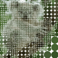<div class="title a_animation"> <a href="javascript:;" target="_blank">无限分裂 <svg xmlns="http://www.w3.org/2000/svg" width="18" height="18" viewbox="0 0 24 24" fill="none" stroke="#000000" stroke-width="2" stroke-linecap="round" stroke-linejoin="round"><g fill="none" fill-rule="evenodd"><path d="M18 14v5a2 2 0 0 1-2 2H5a2 2 0 0 1-2-2V8c0-1.1.9-2 2-2h5M15 3h6v6M10 14 20.2 3.8"></path></g></svg></a></div><div class="description">滑动鼠标，让圆形不断分裂，你会发现一只考拉🐨的照片，并且越来越清晰</div><div class="category" style="background-color:#ff4242;color:#ff4242"> 沙雕</div></div></div><div class="link_item"><div class="content"> 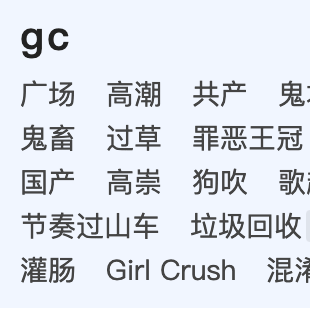<div class="title a_animation"> <a href="javascript:;" target="_blank">能不能好好说话？ <svg xmlns="http://www.w3.org/2000/svg" width="18" height="18" viewbox="0 0 24 24" fill="none" stroke="#000000" stroke-width="2" stroke-linecap="round" stroke-linejoin="round"><g fill="none" fill-rule="evenodd"><path d="M18 14v5a2 2 0 0 1-2 2H5a2 2 0 0 1-2-2V8c0-1.1.9-2 2-2h5M15 3h6v6M10 14 20.2 3.8"></path></g></svg></a></div><div class="description">拼音首字母缩写释义工具，识别网络缩写字母</div><div class="category" style="background-color:#ff4242;color:#ff4242"> 沙雕</div></div></div><div class="link_item"><div class="content"> 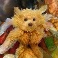<div class="title a_animation"> <a href="javascript:;" target="_blank">AI 图片合成 <svg xmlns="http://www.w3.org/2000/svg" width="18" height="18" viewbox="0 0 24 24" fill="none" stroke="#000000" stroke-width="2" stroke-linecap="round" stroke-linejoin="round"><g fill="none" fill-rule="evenodd"><path d="M18 14v5a2 2 0 0 1-2 2H5a2 2 0 0 1-2-2V8c0-1.1.9-2 2-2h5M15 3h6v6M10 14 20.2 3.8"></path></g></svg></a></div><div class="description">利用 AI 混合两张不同风格的图片，合成一张艺术图</div><div class="category" style="background-color:#ffb547;color:#ffb547"> 创意</div></div></div><div class="link_item"><div class="content"> <div class="title a_animation"> <a href="javascript:;" target="_blank">不会百度么 <svg xmlns="http://www.w3.org/2000/svg" width="18" height="18" viewbox="0 0 24 24" fill="none" stroke="#000000" stroke-width="2" stroke-linecap="round" stroke-linejoin="round"><g fill="none" fill-rule="evenodd"><path d="M18 14v5a2 2 0 0 1-2 2H5a2 2 0 0 1-2-2V8c0-1.1.9-2 2-2h5M15 3h6v6M10 14 20.2 3.8"></path></g></svg></a></div><div class="description">有人向你问了不想回答的问题，输入关键字，生成链接，然后发给他</div><div class="category" style="background-color:#ff4242;color:#ff4242"> 沙雕</div></div></div><div class="link_item"><div class="content"> 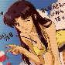<div class="title a_animation"> <a href="javascript:;" target="_blank">蒸気機 <svg xmlns="http://www.w3.org/2000/svg" width="18" height="18" viewbox="0 0 24 24" fill="none" stroke="#000000" stroke-width="2" stroke-linecap="round" stroke-linejoin="round"><g fill="none" fill-rule="evenodd"><path d="M18 14v5a2 2 0 0 1-2 2H5a2 2 0 0 1-2-2V8c0-1.1.9-2 2-2h5M15 3h6v6M10 14 20.2 3.8"></path></g></svg></a></div><div class="description">虚拟信号蒸汽波风格化影像后期工具</div><div class="category" style="background-color:#ffb547;color:#ffb547"> 创意</div></div></div><div class="link_item"><div class="content"> 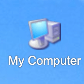<div class="title a_animation"> <a href="javascript:;" target="_blank">Geek prank <svg xmlns="http://www.w3.org/2000/svg" width="18" height="18" viewbox="0 0 24 24" fill="none" stroke="#000000" stroke-width="2" stroke-linecap="round" stroke-linejoin="round"><g fill="none" fill-rule="evenodd"><path d="M18 14v5a2 2 0 0 1-2 2H5a2 2 0 0 1-2-2V8c0-1.1.9-2 2-2h5M15 3h6v6M10 14 20.2 3.8"></path></g></svg></a></div><div class="description">假装 XP 系统和其他系统界面</div><div class="category" style="background-color:#ffb547;color:#ffb547"> 创意</div></div></div><div class="link_item"><div class="content"> 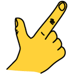<div class="title a_animation"> <a href="javascript:;" target="_blank">快速涂鸦 <svg xmlns="http://www.w3.org/2000/svg" width="18" height="18" viewbox="0 0 24 24" fill="none" stroke="#000000" stroke-width="2" stroke-linecap="round" stroke-linejoin="round"><g fill="none" fill-rule="evenodd"><path d="M18 14v5a2 2 0 0 1-2 2H5a2 2 0 0 1-2-2V8c0-1.1.9-2 2-2h5M15 3h6v6M10 14 20.2 3.8"></path></g></svg></a></div><div class="description">20 秒时间，你画 AI 猜</div><div class="category" style="background-color:#ffb547;color:#ffb547"> 创意</div></div></div><div class="link_item"><div class="content"> <div class="title a_animation"> <a href="javascript:;" target="_blank">Bellwoods <svg xmlns="http://www.w3.org/2000/svg" width="18" height="18" viewbox="0 0 24 24" fill="none" stroke="#000000" stroke-width="2" stroke-linecap="round" stroke-linejoin="round"><g fill="none" fill-rule="evenodd"><path d="M18 14v5a2 2 0 0 1-2 2H5a2 2 0 0 1-2-2V8c0-1.1.9-2 2-2h5M15 3h6v6M10 14 20.2 3.8"></path></g></svg></a></div><div class="description">移动鼠标放风筝，制造动听的声音</div><div class="category" style="background-color:#02aaff;color:#02aaff"> 游戏</div></div></div><div class="link_item"><div class="content"> <div class="title a_animation"> <a href="javascript:;" target="_blank">视频变漫画 <svg xmlns="http://www.w3.org/2000/svg" width="18" height="18" viewbox="0 0 24 24" fill="none" stroke="#000000" stroke-width="2" stroke-linecap="round" stroke-linejoin="round"><g fill="none" fill-rule="evenodd"><path d="M18 14v5a2 2 0 0 1-2 2H5a2 2 0 0 1-2-2V8c0-1.1.9-2 2-2h5M15 3h6v6M10 14 20.2 3.8"></path></g></svg></a></div><div class="description">输入一个视频链接，网站借助 AI 功能将这个视频变成漫画</div><div class="category" style="background-color:#ffb547;color:#ffb547"> 创意</div></div></div><div class="link_item"><div class="content"> <div class="title a_animation"> <a href="javascript:;" target="_blank">开源人物肖像 <svg xmlns="http://www.w3.org/2000/svg" width="18" height="18" viewbox="0 0 24 24" fill="none" stroke="#000000" stroke-width="2" stroke-linecap="round" stroke-linejoin="round"><g fill="none" fill-rule="evenodd"><path d="M18 14v5a2 2 0 0 1-2 2H5a2 2 0 0 1-2-2V8c0-1.1.9-2 2-2h5M15 3h6v6M10 14 20.2 3.8"></path></g></svg></a></div><div class="description">那些推动计算机革命的开源程序员的肖像</div><div class="category" style="background-color:#23c4a4;color:#23c4a4"> 程序员</div></div></div><div class="link_item"><div class="content"> <div class="title a_animation"> <a href="javascript:;" target="_blank">核弹威力 <svg xmlns="http://www.w3.org/2000/svg" width="18" height="18" viewbox="0 0 24 24" fill="none" stroke="#000000" stroke-width="2" stroke-linecap="round" stroke-linejoin="round"><g fill="none" fill-rule="evenodd"><path d="M18 14v5a2 2 0 0 1-2 2H5a2 2 0 0 1-2-2V8c0-1.1.9-2 2-2h5M15 3h6v6M10 14 20.2 3.8"></path></g></svg></a></div><div class="description">选择某个核弹查看爆炸影响的范围大小</div><div class="category" style="background-color:#316af1;color:#316af1"> 世界</div></div></div><div class="link_item"><div class="content"> <div class="title a_animation"> <a href="javascript:;" target="_blank">卦象二维码 <svg xmlns="http://www.w3.org/2000/svg" width="18" height="18" viewbox="0 0 24 24" fill="none" stroke="#000000" stroke-width="2" stroke-linecap="round" stroke-linejoin="round"><g fill="none" fill-rule="evenodd"><path d="M18 14v5a2 2 0 0 1-2 2H5a2 2 0 0 1-2-2V8c0-1.1.9-2 2-2h5M15 3h6v6M10 14 20.2 3.8"></path></g></svg></a></div><div class="description">用 《易经》的六十四卦象来生成二维码，据说更快</div><div class="category" style="background-color:#23c4a4;color:#23c4a4"> 程序员</div></div></div><div class="link_item"><div class="content"> <div class="title a_animation"> <a href="javascript:;" target="_blank">漫威 API <svg xmlns="http://www.w3.org/2000/svg" width="18" height="18" viewbox="0 0 24 24" fill="none" stroke="#000000" stroke-width="2" stroke-linecap="round" stroke-linejoin="round"><g fill="none" fill-rule="evenodd"><path d="M18 14v5a2 2 0 0 1-2 2H5a2 2 0 0 1-2-2V8c0-1.1.9-2 2-2h5M15 3h6v6M10 14 20.2 3.8"></path></g></svg></a></div><div class="description">漫威提供的 API，获取英雄信息和故事等</div><div class="category" style="background-color:#23c4a4;color:#23c4a4"> 程序员</div></div></div><div class="link_item"><div class="content"> <div class="title a_animation"> <a href="javascript:;" target="_blank">黑白照片上色 <svg xmlns="http://www.w3.org/2000/svg" width="18" height="18" viewbox="0 0 24 24" fill="none" stroke="#000000" stroke-width="2" stroke-linecap="round" stroke-linejoin="round"><g fill="none" fill-rule="evenodd"><path d="M18 14v5a2 2 0 0 1-2 2H5a2 2 0 0 1-2-2V8c0-1.1.9-2 2-2h5M15 3h6v6M10 14 20.2 3.8"></path></g></svg></a></div><div class="description">基于深度学习来给老旧的黑白照片自动上色</div><div class="category" style="background-color:#ffb547;color:#ffb547"> 创意</div></div></div><div class="link_item"><div class="content"> <div class="title a_animation"> <a href="javascript:;" target="_blank">频闪幻觉 <svg xmlns="http://www.w3.org/2000/svg" width="18" height="18" viewbox="0 0 24 24" fill="none" stroke="#000000" stroke-width="2" stroke-linecap="round" stroke-linejoin="round"><g fill="none" fill-rule="evenodd"><path d="M18 14v5a2 2 0 0 1-2 2H5a2 2 0 0 1-2-2V8c0-1.1.9-2 2-2h5M15 3h6v6M10 14 20.2 3.8"></path></g></svg></a></div><div class="description">通过观看 30 秒的频闪动画，让人产生视觉幻感</div><div class="category" style="background-color:#ff4242;color:#ff4242"> 沙雕</div></div></div><div class="link_item"><div class="content"> <div class="title a_animation"> <a href="javascript:;" target="_blank">井字棋 <svg xmlns="http://www.w3.org/2000/svg" width="18" height="18" viewbox="0 0 24 24" fill="none" stroke="#000000" stroke-width="2" stroke-linecap="round" stroke-linejoin="round"><g fill="none" fill-rule="evenodd"><path d="M18 14v5a2 2 0 0 1-2 2H5a2 2 0 0 1-2-2V8c0-1.1.9-2 2-2h5M15 3h6v6M10 14 20.2 3.8"></path></g></svg></a></div><div class="description">和电脑对战的井字棋，看看你能赢几局</div><div class="category" style="background-color:#02aaff;color:#02aaff"> 游戏</div></div></div><div class="link_item"><div class="content"> 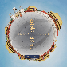<div class="title a_animation"> <a href="javascript:;" target="_blank">全景故宫 <svg xmlns="http://www.w3.org/2000/svg" width="18" height="18" viewbox="0 0 24 24" fill="none" stroke="#000000" stroke-width="2" stroke-linecap="round" stroke-linejoin="round"><g fill="none" fill-rule="evenodd"><path d="M18 14v5a2 2 0 0 1-2 2H5a2 2 0 0 1-2-2V8c0-1.1.9-2 2-2h5M15 3h6v6M10 14 20.2 3.8"></path></g></svg></a></div><div class="description">线上体验游览故宫，360° 查看各个宫殿，有文字介绍</div><div class="category" style="background-color:#316af1;color:#316af1"> 世界</div></div></div><div class="link_item"><div class="content"> 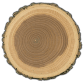<div class="title a_animation"> <a href="javascript:;" target="_blank">木材数据库 <svg xmlns="http://www.w3.org/2000/svg" width="18" height="18" viewbox="0 0 24 24" fill="none" stroke="#000000" stroke-width="2" stroke-linecap="round" stroke-linejoin="round"><g fill="none" fill-rule="evenodd"><path d="M18 14v5a2 2 0 0 1-2 2H5a2 2 0 0 1-2-2V8c0-1.1.9-2 2-2h5M15 3h6v6M10 14 20.2 3.8"></path></g></svg></a></div><div class="description">木材数据库。有详细的介绍，包括硬度排行等</div><div class="category" style="background-color:#316af1;color:#316af1"> 世界</div></div></div><div class="link_item"><div class="content"> <div class="title a_animation"> <a href="javascript:;" target="_blank">遥控车 <svg xmlns="http://www.w3.org/2000/svg" width="18" height="18" viewbox="0 0 24 24" fill="none" stroke="#000000" stroke-width="2" stroke-linecap="round" stroke-linejoin="round"><g fill="none" fill-rule="evenodd"><path d="M18 14v5a2 2 0 0 1-2 2H5a2 2 0 0 1-2-2V8c0-1.1.9-2 2-2h5M15 3h6v6M10 14 20.2 3.8"></path></g></svg></a></div><div class="description">控制模拟的遥控车在地图上随意行驶，十分解压</div><div class="category" style="background-color:#02aaff;color:#02aaff"> 游戏</div></div></div><div class="link_item"><div class="content"> <div class="title a_animation"> <a href="javascript:;" target="_blank">太鼓达人 <svg xmlns="http://www.w3.org/2000/svg" width="18" height="18" viewbox="0 0 24 24" fill="none" stroke="#000000" stroke-width="2" stroke-linecap="round" stroke-linejoin="round"><g fill="none" fill-rule="evenodd"><path d="M18 14v5a2 2 0 0 1-2 2H5a2 2 0 0 1-2-2V8c0-1.1.9-2 2-2h5M15 3h6v6M10 14 20.2 3.8"></path></g></svg></a></div><div class="description">在线版太鼓达人，可以双人联机</div><div class="category" style="background-color:#02aaff;color:#02aaff"> 游戏</div></div></div><div class="link_item"><div class="content"> <div class="title a_animation"> <a href="javascript:;" target="_blank">自由钢琴 <svg xmlns="http://www.w3.org/2000/svg" width="18" height="18" viewbox="0 0 24 24" fill="none" stroke="#000000" stroke-width="2" stroke-linecap="round" stroke-linejoin="round"><g fill="none" fill-rule="evenodd"><path d="M18 14v5a2 2 0 0 1-2 2H5a2 2 0 0 1-2-2V8c0-1.1.9-2 2-2h5M15 3h6v6M10 14 20.2 3.8"></path></g></svg></a></div><div class="description">在线弹钢琴，有一些歌谱可以使用</div><div class="category" style="background-color:#02aaff;color:#02aaff"> 游戏</div></div></div><div class="link_item"><div class="content"> <div class="title a_animation"> <a href="javascript:;" target="_blank">索尼风景图 <svg xmlns="http://www.w3.org/2000/svg" width="18" height="18" viewbox="0 0 24 24" fill="none" stroke="#000000" stroke-width="2" stroke-linecap="round" stroke-linejoin="round"><g fill="none" fill-rule="evenodd"><path d="M18 14v5a2 2 0 0 1-2 2H5a2 2 0 0 1-2-2V8c0-1.1.9-2 2-2h5M15 3h6v6M10 14 20.2 3.8"></path></g></svg></a></div><div class="description">可以看一些城市的二十四小时风景照片，里面的音乐也很好听</div><div class="category" style="background-color:#316af1;color:#316af1"> 世界</div></div></div><div class="link_item"><div class="content"> 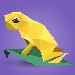<div class="title a_animation"> <a href="javascript:;" target="_blank">濒临灭绝的动物 <svg xmlns="http://www.w3.org/2000/svg" width="18" height="18" viewbox="0 0 24 24" fill="none" stroke="#000000" stroke-width="2" stroke-linecap="round" stroke-linejoin="round"><g fill="none" fill-rule="evenodd"><path d="M18 14v5a2 2 0 0 1-2 2H5a2 2 0 0 1-2-2V8c0-1.1.9-2 2-2h5M15 3h6v6M10 14 20.2 3.8"></path></g></svg></a></div><div class="description">30 种 CSS 碎片拼图，30 种濒临灭绝的动物（英文版：<a href="javascript:;" target="_blank">http://species-in-pieces.com/</a>）</div><div class="category" style="background-color:#ffb547;color:#ffb547"> 创意</div></div></div><div class="link_item"><div class="content"> 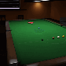<div class="title a_animation"> <a href="javascript:;" target="_blank">斯诺克 <svg xmlns="http://www.w3.org/2000/svg" width="18" height="18" viewbox="0 0 24 24" fill="none" stroke="#000000" stroke-width="2" stroke-linecap="round" stroke-linejoin="round"><g fill="none" fill-rule="evenodd"><path d="M18 14v5a2 2 0 0 1-2 2H5a2 2 0 0 1-2-2V8c0-1.1.9-2 2-2h5M15 3h6v6M10 14 20.2 3.8"></path></g></svg></a></div><div class="description">场景非常真实</div><div class="category" style="background-color:#02aaff;color:#02aaff"> 游戏</div></div></div><div class="link_item"><div class="content"> 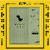<div class="title a_animation"> <a href="javascript:;" target="_blank">俄罗斯方块 <svg xmlns="http://www.w3.org/2000/svg" width="18" height="18" viewbox="0 0 24 24" fill="none" stroke="#000000" stroke-width="2" stroke-linecap="round" stroke-linejoin="round"><g fill="none" fill-rule="evenodd"><path d="M18 14v5a2 2 0 0 1-2 2H5a2 2 0 0 1-2-2V8c0-1.1.9-2 2-2h5M15 3h6v6M10 14 20.2 3.8"></path></g></svg></a></div><div class="description">怀旧掌机版</div><div class="category" style="background-color:#02aaff;color:#02aaff"> 游戏</div></div></div><div class="link_item"><div class="content"> <div class="title a_animation"> <a href="javascript:;" target="_blank">PornHub Logo <svg xmlns="http://www.w3.org/2000/svg" width="18" height="18" viewbox="0 0 24 24" fill="none" stroke="#000000" stroke-width="2" stroke-linecap="round" stroke-linejoin="round"><g fill="none" fill-rule="evenodd"><path d="M18 14v5a2 2 0 0 1-2 2H5a2 2 0 0 1-2-2V8c0-1.1.9-2 2-2h5M15 3h6v6M10 14 20.2 3.8"></path></g></svg></a></div><div class="description">PornHub 风格 Logo 生成器</div><div class="category" style="background-color:#ff4242;color:#ff4242"> 沙雕</div></div></div><div class="link_item"><div class="content"> <div class="title a_animation"> <a href="javascript:;" target="_blank">P 站 <svg xmlns="http://www.w3.org/2000/svg" width="18" height="18" viewbox="0 0 24 24" fill="none" stroke="#000000" stroke-width="2" stroke-linecap="round" stroke-linejoin="round"><g fill="none" fill-rule="evenodd"><path d="M18 14v5a2 2 0 0 1-2 2H5a2 2 0 0 1-2-2V8c0-1.1.9-2 2-2h5M15 3h6v6M10 14 20.2 3.8"></path></g></svg></a></div><div class="description">P 站可访问版</div><div class="category" style="background-color:#ffb547;color:#ffb547"> 创意</div></div></div><div class="link_item"><div class="content"> <div class="title a_animation"> <a href="javascript:;" target="_blank">毒鸡汤 <svg xmlns="http://www.w3.org/2000/svg" width="18" height="18" viewbox="0 0 24 24" fill="none" stroke="#000000" stroke-width="2" stroke-linecap="round" stroke-linejoin="round"><g fill="none" fill-rule="evenodd"><path d="M18 14v5a2 2 0 0 1-2 2H5a2 2 0 0 1-2-2V8c0-1.1.9-2 2-2h5M15 3h6v6M10 14 20.2 3.8"></path></g></svg></a></div><div class="description">获取无穷无尽的毒鸡汤</div><div class="category" style="background-color:#ff4242;color:#ff4242"> 沙雕</div></div></div><div class="link_item"><div class="content"> <div class="title a_animation"> <a href="javascript:;" target="_blank">图片粒子效果 <svg xmlns="http://www.w3.org/2000/svg" width="18" height="18" viewbox="0 0 24 24" fill="none" stroke="#000000" stroke-width="2" stroke-linecap="round" stroke-linejoin="round"><g fill="none" fill-rule="evenodd"><path d="M18 14v5a2 2 0 0 1-2 2H5a2 2 0 0 1-2-2V8c0-1.1.9-2 2-2h5M15 3h6v6M10 14 20.2 3.8"></path></g></svg></a></div><div class="description">非常炫酷的图片变换粒子效果</div><div class="category" style="background-color:#23c4a4;color:#23c4a4"> 程序员</div></div></div><div class="link_item"><div class="content"> <div class="title a_animation"> <a href="javascript:;" target="_blank">9 GANS <svg xmlns="http://www.w3.org/2000/svg" width="18" height="18" viewbox="0 0 24 24" fill="none" stroke="#000000" stroke-width="2" stroke-linecap="round" stroke-linejoin="round"><g fill="none" fill-rule="evenodd"><path d="M18 14v5a2 2 0 0 1-2 2H5a2 2 0 0 1-2-2V8c0-1.1.9-2 2-2h5M15 3h6v6M10 14 20.2 3.8"></path></g></svg></a></div><div class="description">每小时产生 9 张由人工智能创作的绘画作品</div><div class="category" style="background-color:#ffb547;color:#ffb547"> 创意</div></div></div><div class="link_item"><div class="content"> 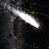<div class="title a_animation"> <a href="javascript:;" target="_blank">流星雨 <svg xmlns="http://www.w3.org/2000/svg" width="18" height="18" viewbox="0 0 24 24" fill="none" stroke="#000000" stroke-width="2" stroke-linecap="round" stroke-linejoin="round"><g fill="none" fill-rule="evenodd"><path d="M18 14v5a2 2 0 0 1-2 2H5a2 2 0 0 1-2-2V8c0-1.1.9-2 2-2h5M15 3h6v6M10 14 20.2 3.8"></path></g></svg></a></div><div class="description">以太空视角查看某个时间流星雨的形成</div><div class="category" style="background-color:#316af1;color:#316af1"> 世界</div></div></div><div class="link_item"><div class="content"> <div class="title a_animation"> <a href="javascript:;" target="_blank">Emoji 游戏 <svg xmlns="http://www.w3.org/2000/svg" width="18" height="18" viewbox="0 0 24 24" fill="none" stroke="#000000" stroke-width="2" stroke-linecap="round" stroke-linejoin="round"><g fill="none" fill-rule="evenodd"><path d="M18 14v5a2 2 0 0 1-2 2H5a2 2 0 0 1-2-2V8c0-1.1.9-2 2-2h5M15 3h6v6M10 14 20.2 3.8"></path></g></svg></a></div><div class="description">在无数多的 emoji 中找到唯一一个没有动的</div><div class="category" style="background-color:#ff4242;color:#ff4242"> 沙雕</div></div></div><div class="link_item"><div class="content"> <div class="title a_animation"> <a href="javascript:;" target="_blank">找到隐藏的牛 <svg xmlns="http://www.w3.org/2000/svg" width="18" height="18" viewbox="0 0 24 24" fill="none" stroke="#000000" stroke-width="2" stroke-linecap="round" stroke-linejoin="round"><g fill="none" fill-rule="evenodd"><path d="M18 14v5a2 2 0 0 1-2 2H5a2 2 0 0 1-2-2V8c0-1.1.9-2 2-2h5M15 3h6v6M10 14 20.2 3.8"></path></g></svg></a></div><div class="description">移动鼠标，根据动物叫声大小找到它们</div><div class="category" style="background-color:#ff4242;color:#ff4242"> 沙雕</div></div></div><div class="link_item"><div class="content"> <div class="title a_animation"> <a href="javascript:;" target="_blank">知妖（中国妖怪百集） <svg xmlns="http://www.w3.org/2000/svg" width="18" height="18" viewbox="0 0 24 24" fill="none" stroke="#000000" stroke-width="2" stroke-linecap="round" stroke-linejoin="round"><g fill="none" fill-rule="evenodd"><path d="M18 14v5a2 2 0 0 1-2 2H5a2 2 0 0 1-2-2V8c0-1.1.9-2 2-2h5M15 3h6v6M10 14 20.2 3.8"></path></g></svg></a></div><div class="description">收集中国古今妖怪</div><div class="category" style="background-color:#8ec90e;color:#8ec90e"> 历史</div></div></div><div class="link_item"><div class="content"> <div class="title a_animation"> <a href="javascript:;" target="_blank">天际网络摄像头 <svg xmlns="http://www.w3.org/2000/svg" width="18" height="18" viewbox="0 0 24 24" fill="none" stroke="#000000" stroke-width="2" stroke-linecap="round" stroke-linejoin="round"><g fill="none" fill-rule="evenodd"><path d="M18 14v5a2 2 0 0 1-2 2H5a2 2 0 0 1-2-2V8c0-1.1.9-2 2-2h5M15 3h6v6M10 14 20.2 3.8"></path></g></svg></a></div><div class="description">观看世界各地景区的实时摄像头画面</div><div class="category" style="background-color:#316af1;color:#316af1"> 世界</div></div></div><div class="link_item"><div class="content"> <div class="title a_animation"> <a href="javascript:;" target="_blank">深海 <svg xmlns="http://www.w3.org/2000/svg" width="18" height="18" viewbox="0 0 24 24" fill="none" stroke="#000000" stroke-width="2" stroke-linecap="round" stroke-linejoin="round"><g fill="none" fill-rule="evenodd"><path d="M18 14v5a2 2 0 0 1-2 2H5a2 2 0 0 1-2-2V8c0-1.1.9-2 2-2h5M15 3h6v6M10 14 20.2 3.8"></path></g></svg></a></div><div class="description">海洋不同深度都有什么生物</div><div class="category" style="background-color:#316af1;color:#316af1"> 世界</div></div></div><div class="link_item"><div class="content"> <div class="title a_animation"> <a href="javascript:;" target="_blank">在线AI图像处理 <svg xmlns="http://www.w3.org/2000/svg" width="18" height="18" viewbox="0 0 24 24" fill="none" stroke="#000000" stroke-width="2" stroke-linecap="round" stroke-linejoin="round"><g fill="none" fill-rule="evenodd"><path d="M18 14v5a2 2 0 0 1-2 2H5a2 2 0 0 1-2-2V8c0-1.1.9-2 2-2h5M15 3h6v6M10 14 20.2 3.8"></path></g></svg></a></div><div class="description">黑白图像修复、图像无损放大和人像动漫化等</div><div class="category" style="background-color:#ffb547;color:#ffb547"> 创意</div></div></div><div class="link_item"><div class="content"> 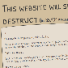<div class="title a_animation"> <a href="javascript:;" target="_blank">自我销毁网站 <svg xmlns="http://www.w3.org/2000/svg" width="18" height="18" viewbox="0 0 24 24" fill="none" stroke="#000000" stroke-width="2" stroke-linecap="round" stroke-linejoin="round"><g fill="none" fill-rule="evenodd"><path d="M18 14v5a2 2 0 0 1-2 2H5a2 2 0 0 1-2-2V8c0-1.1.9-2 2-2h5M15 3h6v6M10 14 20.2 3.8"></path></g></svg></a></div><div class="description">一个匿名网站，如果 24 小时内没有收到访问者的留言，将会自我销毁</div><div class="category" style="background-color:#ffb547;color:#ffb547"> 创意</div></div></div><div class="link_item"><div class="content"> <div class="title a_animation"> <a href="javascript:;" target="_blank">在线 DOS 游戏 <svg xmlns="http://www.w3.org/2000/svg" width="18" height="18" viewbox="0 0 24 24" fill="none" stroke="#000000" stroke-width="2" stroke-linecap="round" stroke-linejoin="round"><g fill="none" fill-rule="evenodd"><path d="M18 14v5a2 2 0 0 1-2 2H5a2 2 0 0 1-2-2V8c0-1.1.9-2 2-2h5M15 3h6v6M10 14 20.2 3.8"></path></g></svg></a></div><div class="description">在线玩 1800+ 个 DOS 游戏（金庸群侠传、仙剑奇侠传、红色警戒等）</div><div class="category" style="background-color:#02aaff;color:#02aaff"> 游戏</div></div></div><div class="link_item"><div class="content"> <div class="title a_animation"> <a href="javascript:;" target="_blank">图片隐写术 <svg xmlns="http://www.w3.org/2000/svg" width="18" height="18" viewbox="0 0 24 24" fill="none" stroke="#000000" stroke-width="2" stroke-linecap="round" stroke-linejoin="round"><g fill="none" fill-rule="evenodd"><path d="M18 14v5a2 2 0 0 1-2 2H5a2 2 0 0 1-2-2V8c0-1.1.9-2 2-2h5M15 3h6v6M10 14 20.2 3.8"></path></g></svg></a></div><div class="description">图片隐写术加密、图片隐写术解密</div><div class="category" style="background-color:#ffb547;color:#ffb547"> 创意</div></div></div><div class="link_item"><div class="content"> <div class="title a_animation"> <a href="javascript:;" target="_blank">Link Lock <svg xmlns="http://www.w3.org/2000/svg" width="18" height="18" viewbox="0 0 24 24" fill="none" stroke="#000000" stroke-width="2" stroke-linecap="round" stroke-linejoin="round"><g fill="none" fill-rule="evenodd"><path d="M18 14v5a2 2 0 0 1-2 2H5a2 2 0 0 1-2-2V8c0-1.1.9-2 2-2h5M15 3h6v6M10 14 20.2 3.8"></path></g></svg></a></div><div class="description">加密 URL</div><div class="category" style="background-color:#ffb547;color:#ffb547"> 创意</div></div></div><div class="link_item"><div class="content"> <div class="title a_animation"> <a href="javascript:;" target="_blank">猫狗还是情人 <svg xmlns="http://www.w3.org/2000/svg" width="18" height="18" viewbox="0 0 24 24" fill="none" stroke="#000000" stroke-width="2" stroke-linecap="round" stroke-linejoin="round"><g fill="none" fill-rule="evenodd"><path d="M18 14v5a2 2 0 0 1-2 2H5a2 2 0 0 1-2-2V8c0-1.1.9-2 2-2h5M15 3h6v6M10 14 20.2 3.8"></path></g></svg></a></div><div class="description">“做只猫，做只狗，不做情人”--《爱与诚》</div><div class="category" style="background-color:#ff4242;color:#ff4242"> 沙雕</div></div></div><div class="link_item"><div class="content"> <div class="title a_animation"> <a href="javascript:;" target="_blank">傻逼网 <svg xmlns="http://www.w3.org/2000/svg" width="18" height="18" viewbox="0 0 24 24" fill="none" stroke="#000000" stroke-width="2" stroke-linecap="round" stroke-linejoin="round"><g fill="none" fill-rule="evenodd"><path d="M18 14v5a2 2 0 0 1-2 2H5a2 2 0 0 1-2-2V8c0-1.1.9-2 2-2h5M15 3h6v6M10 14 20.2 3.8"></path></g></svg></a></div><div class="description">专业的傻逼鉴定平台</div><div class="category" style="background-color:#ff4242;color:#ff4242"> 沙雕</div></div></div><div class="link_item"><div class="content"> 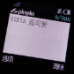<div class="title a_animation"> <a href="javascript:;" target="_blank">诺基亚短信图片生成器 <svg xmlns="http://www.w3.org/2000/svg" width="18" height="18" viewbox="0 0 24 24" fill="none" stroke="#000000" stroke-width="2" stroke-linecap="round" stroke-linejoin="round"><g fill="none" fill-rule="evenodd"><path d="M18 14v5a2 2 0 0 1-2 2H5a2 2 0 0 1-2-2V8c0-1.1.9-2 2-2h5M15 3h6v6M10 14 20.2 3.8"></path></g></svg></a></div><div class="description">有内鬼 终止交易</div><div class="category" style="background-color:#ff4242;color:#ff4242"> 沙雕</div></div></div><div class="link_item"><div class="content"> <div class="title a_animation"> <a href="javascript:;" target="_blank">带你去无用的网站 <svg xmlns="http://www.w3.org/2000/svg" width="18" height="18" viewbox="0 0 24 24" fill="none" stroke="#000000" stroke-width="2" stroke-linecap="round" stroke-linejoin="round"><g fill="none" fill-rule="evenodd"><path d="M18 14v5a2 2 0 0 1-2 2H5a2 2 0 0 1-2-2V8c0-1.1.9-2 2-2h5M15 3h6v6M10 14 20.2 3.8"></path></g></svg></a></div><div class="description">点击按钮，随机进入另一个无用的网站</div><div class="category" style="background-color:#ff4242;color:#ff4242"> 沙雕</div></div></div><div class="link_item"><div class="content"> 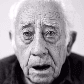<div class="title a_animation"> <a href="javascript:;" target="_blank">节奏照片 <svg xmlns="http://www.w3.org/2000/svg" width="18" height="18" viewbox="0 0 24 24" fill="none" stroke="#000000" stroke-width="2" stroke-linecap="round" stroke-linejoin="round"><g fill="none" fill-rule="evenodd"><path d="M18 14v5a2 2 0 0 1-2 2H5a2 2 0 0 1-2-2V8c0-1.1.9-2 2-2h5M15 3h6v6M10 14 20.2 3.8"></path></g></svg></a></div><div class="description">可以让照片中的人脸跟着音乐律动</div><div class="category" style="background-color:#ff4242;color:#ff4242"> 沙雕</div></div></div><div class="link_item"><div class="content"> <div class="title a_animation"> <a href="javascript:;" target="_blank">Pixel Pin <svg xmlns="http://www.w3.org/2000/svg" width="18" height="18" viewbox="0 0 24 24" fill="none" stroke="#000000" stroke-width="2" stroke-linecap="round" stroke-linejoin="round"><g fill="none" fill-rule="evenodd"><path d="M18 14v5a2 2 0 0 1-2 2H5a2 2 0 0 1-2-2V8c0-1.1.9-2 2-2h5M15 3h6v6M10 14 20.2 3.8"></path></g></svg></a></div><div class="description">使用图片作为用户密码</div><div class="category" style="background-color:#ffb547;color:#ffb547"> 创意</div></div></div><div class="link_item"><div class="content"> <div class="title a_animation"> <a href="javascript:;" target="_blank">Image Charts <svg xmlns="http://www.w3.org/2000/svg" width="18" height="18" viewbox="0 0 24 24" fill="none" stroke="#000000" stroke-width="2" stroke-linecap="round" stroke-linejoin="round"><g fill="none" fill-rule="evenodd"><path d="M18 14v5a2 2 0 0 1-2 2H5a2 2 0 0 1-2-2V8c0-1.1.9-2 2-2h5M15 3h6v6M10 14 20.2 3.8"></path></g></svg></a></div><div class="description">一个链接就是一个图表</div><div class="category" style="background-color:#23c4a4;color:#23c4a4"> 程序员</div></div></div><div class="link_item"><div class="content"> <div class="title a_animation"> <a href="javascript:;" target="_blank">网站设计博物馆 <svg xmlns="http://www.w3.org/2000/svg" width="18" height="18" viewbox="0 0 24 24" fill="none" stroke="#000000" stroke-width="2" stroke-linecap="round" stroke-linejoin="round"><g fill="none" fill-rule="evenodd"><path d="M18 14v5a2 2 0 0 1-2 2H5a2 2 0 0 1-2-2V8c0-1.1.9-2 2-2h5M15 3h6v6M10 14 20.2 3.8"></path></g></svg></a></div><div class="description">展出 1600 多个网站从 1991 到 2006 年主页的设计</div><div class="category" style="background-color:#8ec90e;color:#8ec90e"> 历史</div></div></div><div class="link_item"><div class="content"> 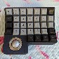<div class="title a_animation"> <a href="javascript:;" target="_blank">机械键盘博物馆 <svg xmlns="http://www.w3.org/2000/svg" width="18" height="18" viewbox="0 0 24 24" fill="none" stroke="#000000" stroke-width="2" stroke-linecap="round" stroke-linejoin="round"><g fill="none" fill-rule="evenodd"><path d="M18 14v5a2 2 0 0 1-2 2H5a2 2 0 0 1-2-2V8c0-1.1.9-2 2-2h5M15 3h6v6M10 14 20.2 3.8"></path></g></svg></a></div><div class="description">收集了非常多设计独特的机械键盘</div><div class="category" style="background-color:#8ec90e;color:#8ec90e"> 历史</div></div></div><div class="link_item"><div class="content"> 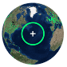<div class="title a_animation"> <a href="javascript:;" target="_blank">电台公园 <svg xmlns="http://www.w3.org/2000/svg" width="18" height="18" viewbox="0 0 24 24" fill="none" stroke="#000000" stroke-width="2" stroke-linecap="round" stroke-linejoin="round"><g fill="none" fill-rule="evenodd"><path d="M18 14v5a2 2 0 0 1-2 2H5a2 2 0 0 1-2-2V8c0-1.1.9-2 2-2h5M15 3h6v6M10 14 20.2 3.8"></path></g></svg></a></div><div class="description">可以收听到世界各地的电台。在世界地图上选一个绿点，就可以收听当地的电台了。</div><div class="category" style="background-color:#316af1;color:#316af1"> 世界</div></div></div><div class="link_item"><div class="content"> <div class="title a_animation"> <a href="javascript:;" target="_blank">Gource <svg xmlns="http://www.w3.org/2000/svg" width="18" height="18" viewbox="0 0 24 24" fill="none" stroke="#000000" stroke-width="2" stroke-linecap="round" stroke-linejoin="round"><g fill="none" fill-rule="evenodd"><path d="M18 14v5a2 2 0 0 1-2 2H5a2 2 0 0 1-2-2V8c0-1.1.9-2 2-2h5M15 3h6v6M10 14 20.2 3.8"></path></g></svg></a></div><div class="description">Gource 可以把代码仓库的提交历史变成视频。你的每一次提交都能让视频中的小人去树上修剪一次枝叶。</div><div class="category" style="background-color:#23c4a4;color:#23c4a4"> 程序员</div></div></div><div class="link_item"><div class="content"> <div class="title a_animation"> <a href="javascript:;" target="_blank">CSS 油画 <svg xmlns="http://www.w3.org/2000/svg" width="18" height="18" viewbox="0 0 24 24" fill="none" stroke="#000000" stroke-width="2" stroke-linecap="round" stroke-linejoin="round"><g fill="none" fill-rule="evenodd"><path d="M18 14v5a2 2 0 0 1-2 2H5a2 2 0 0 1-2-2V8c0-1.1.9-2 2-2h5M15 3h6v6M10 14 20.2 3.8"></path></g></svg></a></div><div class="description">CSS 代码“画”的油画（<a href="javascript:;" target="_blank">https://github.com/cyanharlow 查看更多</a>）</div><div class="category" style="background-color:#23c4a4;color:#23c4a4"> 程序员</div></div></div><div class="link_item"><div class="content"> <div class="title a_animation"> <a href="javascript:;" target="_blank">物流艺术 <svg xmlns="http://www.w3.org/2000/svg" width="18" height="18" viewbox="0 0 24 24" fill="none" stroke="#000000" stroke-width="2" stroke-linecap="round" stroke-linejoin="round"><g fill="none" fill-rule="evenodd"><path d="M18 14v5a2 2 0 0 1-2 2H5a2 2 0 0 1-2-2V8c0-1.1.9-2 2-2h5M15 3h6v6M10 14 20.2 3.8"></path></g></svg></a></div><div class="description">记录了一个快递是怎样从斯德哥尔摩经过 37 天到达深圳的</div><div class="category" style="background-color:#316af1;color:#316af1"> 世界</div></div></div><div class="link_item"><div class="content"> <div class="title a_animation"> <a href="javascript:;" target="_blank">全历史 <svg xmlns="http://www.w3.org/2000/svg" width="18" height="18" viewbox="0 0 24 24" fill="none" stroke="#000000" stroke-width="2" stroke-linecap="round" stroke-linejoin="round"><g fill="none" fill-rule="evenodd"><path d="M18 14v5a2 2 0 0 1-2 2H5a2 2 0 0 1-2-2V8c0-1.1.9-2 2-2h5M15 3h6v6M10 14 20.2 3.8"></path></g></svg></a></div><div class="description">让用户沉浸在纵横开阔、左图右史的（历史、人文、社科等）知识海洋中</div><div class="category" style="background-color:#8ec90e;color:#8ec90e"> 历史</div></div></div><div class="link_item"><div class="content"> <div class="title a_animation"> <a href="javascript:;" target="_blank">狐狸照片 <svg xmlns="http://www.w3.org/2000/svg" width="18" height="18" viewbox="0 0 24 24" fill="none" stroke="#000000" stroke-width="2" stroke-linecap="round" stroke-linejoin="round"><g fill="none" fill-rule="evenodd"><path d="M18 14v5a2 2 0 0 1-2 2H5a2 2 0 0 1-2-2V8c0-1.1.9-2 2-2h5M15 3h6v6M10 14 20.2 3.8"></path></g></svg></a></div><div class="description">每次打开网页都会出现一张不同的狐狸照片</div><div class="category" style="background-color:#ff4242;color:#ff4242"> 沙雕</div></div></div><div class="link_item"><div class="content"> <div class="title a_animation"> <a href="javascript:;" target="_blank">极像素 <svg xmlns="http://www.w3.org/2000/svg" width="18" height="18" viewbox="0 0 24 24" fill="none" stroke="#000000" stroke-width="2" stroke-linecap="round" stroke-linejoin="round"><g fill="none" fill-rule="evenodd"><path d="M18 14v5a2 2 0 0 1-2 2H5a2 2 0 0 1-2-2V8c0-1.1.9-2 2-2h5M15 3h6v6M10 14 20.2 3.8"></path></g></svg></a></div><div class="description">超高像素看世界</div><div class="category" style="background-color:#316af1;color:#316af1"> 世界</div></div></div><div class="link_item"><div class="content"> <div class="title a_animation"> <a href="javascript:;" target="_blank">骚 <svg xmlns="http://www.w3.org/2000/svg" width="18" height="18" viewbox="0 0 24 24" fill="none" stroke="#000000" stroke-width="2" stroke-linecap="round" stroke-linejoin="round"><g fill="none" fill-rule="evenodd"><path d="M18 14v5a2 2 0 0 1-2 2H5a2 2 0 0 1-2-2V8c0-1.1.9-2 2-2h5M15 3h6v6M10 14 20.2 3.8"></path></g></svg></a></div><div class="description">分享世界，连接世界</div><div class="category" style="background-color:#316af1;color:#316af1"> 世界</div></div></div><div class="link_item"><div class="content"> <div class="title a_animation"> <a href="javascript:;" target="_blank">CMD.TO <svg xmlns="http://www.w3.org/2000/svg" width="18" height="18" viewbox="0 0 24 24" fill="none" stroke="#000000" stroke-width="2" stroke-linecap="round" stroke-linejoin="round"><g fill="none" fill-rule="evenodd"><path d="M18 14v5a2 2 0 0 1-2 2H5a2 2 0 0 1-2-2V8c0-1.1.9-2 2-2h5M15 3h6v6M10 14 20.2 3.8"></path></g></svg></a></div><div class="description">娱乐型的在线命令行，可以听 FM、查看新闻、打印有趣的文本等</div><div class="category" style="background-color:#23c4a4;color:#23c4a4"> 程序员</div></div></div><div class="link_item"><div class="content"> <div class="title a_animation"> <a href="javascript:;" target="_blank">零宽字符隐藏加密 <svg xmlns="http://www.w3.org/2000/svg" width="18" height="18" viewbox="0 0 24 24" fill="none" stroke="#000000" stroke-width="2" stroke-linecap="round" stroke-linejoin="round"><g fill="none" fill-rule="evenodd"><path d="M18 14v5a2 2 0 0 1-2 2H5a2 2 0 0 1-2-2V8c0-1.1.9-2 2-2h5M15 3h6v6M10 14 20.2 3.8"></path></g></svg></a></div><div class="description">利用零宽字符隐藏加密字符</div><div class="category" style="background-color:#23c4a4;color:#23c4a4"> 程序员</div></div></div><div class="link_item"><div class="content"> <div class="title a_animation"> <a href="javascript:;" target="_blank">Picular <svg xmlns="http://www.w3.org/2000/svg" width="18" height="18" viewbox="0 0 24 24" fill="none" stroke="#000000" stroke-width="2" stroke-linecap="round" stroke-linejoin="round"><g fill="none" fill-rule="evenodd"><path d="M18 14v5a2 2 0 0 1-2 2H5a2 2 0 0 1-2-2V8c0-1.1.9-2 2-2h5M15 3h6v6M10 14 20.2 3.8"></path></g></svg></a></div><div class="description">根据 Google 图片的搜索结果提取颜色</div><div class="category" style="background-color:#ffb547;color:#ffb547"> 创意</div></div></div><div class="link_item"><div class="content"> <div class="title a_animation"> <a href="share.html">我要分享</a></div><div class="description">把有趣的网站分享给大家呗~(●'◡'●)</div></div></div></section><script src="static/js/3.0.js" type="module" defer="" integrity="sha384-OeDn4XE77tdHo8pGtE1apMPmAipjoxUQ++eeJa6EtJCfHlvijigWiJpD7VDPWXV1"></script></html>